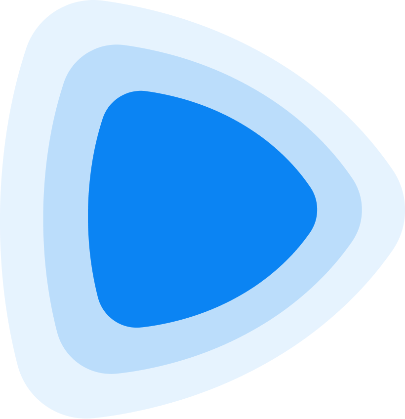

<template id="scene-02-title-card-template">
  <div data-composition-id="scene-02-title-card"
       data-start="0"
       data-width="1920"
       data-height="1080"
       style="position:absolute; inset:0; overflow:hidden;
              font-family:var(--sans); color:var(--ink);">

    <style>
      #s02-content {
        width:100%; height:100%;
        padding: 96px;
        display:flex; flex-direction:column;
        align-items:center; justify-content:center;
        text-align:center; gap:24px;
        box-sizing:border-box;
      }
      #s02-sub {
        font-family: var(--mono);
        font-size: 26px;
        letter-spacing: .22em;
        text-transform: uppercase;
        color: var(--ink-2);
      }
      .s02-title-mega {
        font-family: var(--sans);
        font-weight: 600;
        font-size: 200px;
        line-height: .92;
        letter-spacing: -.04em;
      }
      .s02-stroke {
        -webkit-text-stroke: 2px var(--ink);
        color: transparent;
      }
      .s02-slash {
        color: var(--accent);
        font-style: italic;
        font-weight: 400;
      }
      #s02-foot {
        font-family: var(--mono);
        font-size: 26px;
        letter-spacing: .22em;
        text-transform: uppercase;
        color: var(--ink-2);
        margin-top: 28px;
      }
      .s02-logo-row {
        display: flex;
        align-items: center;
        justify-content: center;
        gap: 80px;
        margin-bottom: 6px;
      }
      .s02-logo-row .s02-logo {
        width: 96px; height: 96px;
        border-radius: 18px; padding: 12px;
        display: grid; place-items: center;
      }
      .s02-logo-row .s02-logo img { width: 100%; height: 100%; object-fit: contain; }
      .s02-logo-row .s02-logo.r { background: rgba(0,229,212,.12); border: 1px solid rgba(0,229,212,.3); }
      .s02-logo-row .s02-logo.h { background: rgba(255,77,26,.12); border: 1px solid rgba(255,77,26,.3); }
      .s02-logo-row .s02-vs {
        font-family: var(--serif); font-style: italic;
        font-size: 48px; color: var(--ink-3);
      }
    </style>

    <div id="s02-content">
      <div id="s02-sub">A 2026 comparison</div>
      <div class="s02-logo-row" id="s02-logos">
        <div class="s02-logo r" id="s02-logo-r"></div>
        <div class="s02-vs" id="s02-vs">vs</div>
        <div class="s02-logo h" id="s02-logo-h"></div>
      </div>
      <div>
        <div class="s02-title-mega" id="s02-rem">REMOTION</div>
        <div class="s02-title-mega s02-slash" id="s02-slash" style="margin: -12px 0;">/</div>
        <div class="s02-title-mega s02-stroke" id="s02-hyp">HYPERFRAMES</div>
      </div>
      <div id="s02-foot">
        <span class="t-remotion">REACT</span>
        &nbsp;·&nbsp;
        <span class="t-hyper">HTML</span>
        &nbsp;·&nbsp; ONE BUILT FOR AGENTS
      </div>
    </div>

    <script src="https://cdn.jsdelivr.net/npm/gsap@3.14.2/dist/gsap.min.js"></script>
    <script>
      window.__timelines = window.__timelines || {};
      const tl = gsap.timeline({ paused: true, defaults: { ease: "power3.out" } });

      tl.set("#s02-sub",    { opacity: 0 }, 0);
      tl.set("#s02-logo-r", { scale: 0.6, opacity: 0 }, 0);
      tl.set("#s02-logo-h", { scale: 0.6, opacity: 0 }, 0);
      tl.set("#s02-vs",     { scale: 0.4, opacity: 0 }, 0);
      tl.set("#s02-rem",    { y: 60, opacity: 0 }, 0);
      tl.set("#s02-slash",  { scale: 0.4, opacity: 0 }, 0);
      tl.set("#s02-hyp",    { y: 60, opacity: 0 }, 0);
      tl.set("#s02-foot",   { opacity: 0 }, 0);

      tl.to("#s02-sub",    { opacity: 1, duration: 0.5 }, 0.1);
      tl.to("#s02-logo-r", { scale: 1, opacity: 1, duration: 0.6, ease: "back.out(1.6)" }, 0.3);
      tl.to("#s02-vs",     { scale: 1, opacity: 1, duration: 0.4, ease: "back.out(2)" }, 0.5);
      tl.to("#s02-logo-h", { scale: 1, opacity: 1, duration: 0.6, ease: "back.out(1.6)" }, 0.6);
      tl.to("#s02-rem",   { y: 0, opacity: 1, duration: 0.7 }, 0.7);
      tl.to("#s02-slash", { scale: 1, opacity: 1, duration: 0.5, ease: "back.out(2)" }, 1.2);
      tl.to("#s02-hyp",   { y: 0, opacity: 1, duration: 0.7 }, 1.5);
      tl.to("#s02-foot",  { opacity: 1, duration: 0.5 }, 2.3);

      // Mid-beats over remaining ~5s
      tl.to("#s02-slash", { rotation: 360, duration: 4.0, ease: "power1.inOut" }, 2.6);
      tl.to("#s02-rem",   { letterSpacing: "-.035em", duration: 1.6, ease: "sine.inOut", yoyo: true, repeat: 1 }, 3.0);
      tl.to("#s02-hyp",   { letterSpacing: "-.035em", duration: 1.6, ease: "sine.inOut", yoyo: true, repeat: 1 }, 4.6);
      tl.to("#s02-foot",  { letterSpacing: ".26em", duration: 1.4, ease: "sine.inOut", yoyo: true, repeat: 1 }, 4.0);

      window.__timelines["scene-02-title-card"] = tl;
    </script>
  </div>
</template>
